The Iceland tour briefing deck open here got mangled: slide 3 has no title and slide 5 duplicates slide 4. Restore the missing title and delete the duplicate, then save.
THINKINGLet me start by examining the slides more carefully. I need to look at slide 3 (which has no title) and slides 4/5 (which appear duplicated). Let me click on slide 3 first to see its content, then determine what title should be restored. I'll also compare slides 4 and 5 to confirm the duplicate.
ACTIONI'll start by examining slide 3 to see its content and understand what title is missing.
EXECUTED (pyautogui in VM)pyautogui.click(174, 517)
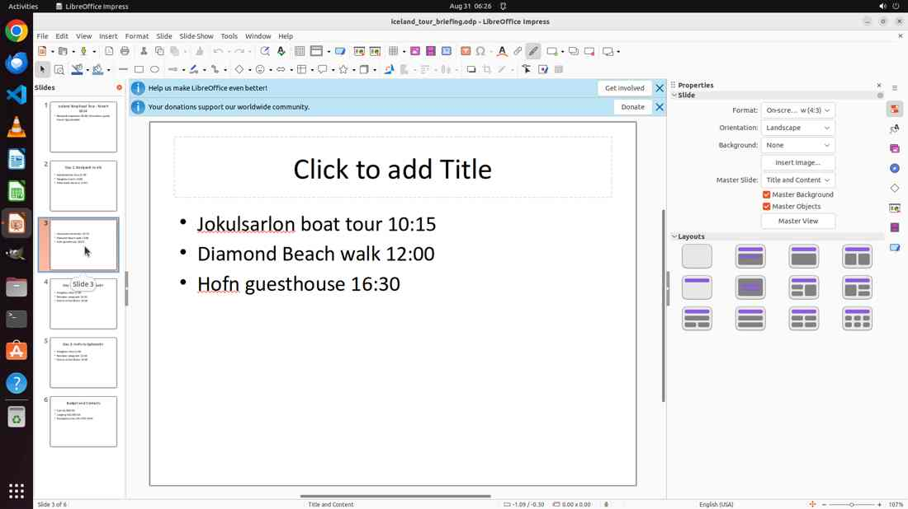
step 2 22:26:46
THINKINGSlide 3 has "Click to add Title" (empty title) with content:
- Jökulsárlón boat tour 10:15
- Diamond Beach walk 12:00
- Hófn guesthouse 16:30
Now I need to figure out what the title should be. The pattern from other slides:
- Slide 1: "Iceland Ring Road Tour - March 2024"
- Slide 2: "Day 1: Reykjavik to Vík"
- Slide 3: (missing) - content is about Jökulsárlón, Diamond Beach, Hófn
- Slide 4: "Day 3: Hófn to Egilsstaðir" (from thumbnail it says "Day 3: Hófn to Egilsstaðir" or similar)
- Slide 5: duplicate of slide 4
- Slide 6: "Budget and Contacts"
Wait, slide 4 thumbnail says "Day 3: Hófn to Egilsstaðir". Let me look more carefully. I need to see the titles of slides 2 and 4 to understand the day-numbering pattern. Let me examine the content of each slide.
Slide 3 content: Jökulsárlón boat tour, Diamond Beach walk, Hófn guesthouse. This is the last day of travel, ending at Hófn.
Slide 4 content (thumbnail): "Haugafell hike 13:00, Reynisfjara viewpoint 14:30, Dinner at Salt Bistro 19:00" - wait, that doesn't match. Let me look again. Actually the thumbnails are small. Let me click on slide 2 and slide 4 to read their titles and content precisely.
The logical title for slide 3 depends on the pattern. If slide 2 is "Day 1: Reykjavik to Vík", then slide 3 might be "Day 2: Vík to Hófn" or similar. But I need to be careful - I shouldn't guess. Let me check the file's original content.
Actually, the best approach here is to look at the raw file to understand what the title originally was. The task says "Restore the missing title" - meaning there's a specific correct title. Let me inspect the .odp file to find the original title text, since it may still be in the file metadata or I can deduce from content.
Actually, let me first check slides 2, 4, 5 to understand the day pattern. Let me click slide 2.
ACTIONSlide 3 is missing its title (shows "Click to add Title") and contains: Jökulsárlón boat tour, Diamond Beach walk, Hófn guesthouse. Let me check the other slides to understand the title pattern and confirm the duplicate.
EXECUTED (pyautogui in VM)pyautogui.click(174, 392)
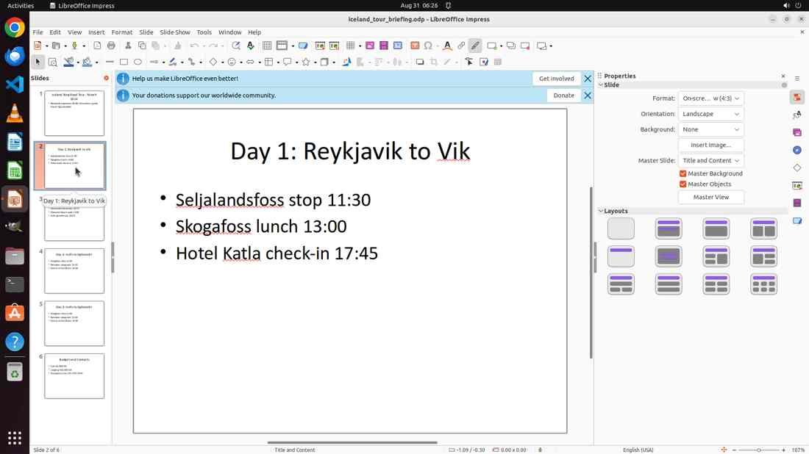
step 3 22:27:04
THINKINGSlide 2: "Day 1: Reykjavik to Vík" with content:
- Seljalandsfoss stop 11:30
- Skógafoss lunch 13:00
- Hotel Katla check-in 17:45
So slide 3 should be "Day 2: ..." The content ends at Hófn guesthouse. Slide 4 starts "Day 3: Hófn to Egilsstaðir" (from thumbnail). So slide 3 is Day 2, going to Hófn. The starting point for day 2 would be Vík (where day 1 ended... well day 1 ended at Hotel Katla near Vík).
So slide 3 title = "Day 2: Vík to Hófn" most likely. Let me verify slide 4's exact title to confirm the "to Hófn" pattern and confirm slide 4/5 duplicate.
ACTIONSlide 2 is "Day 1: Reykjavik to Vík". Let me examine slides 4 and 5 to confirm the duplicate and see the title pattern (slide 3 should be Day 2 ending at Hófn).
EXECUTED (pyautogui in VM)pyautogui.click(174, 642)
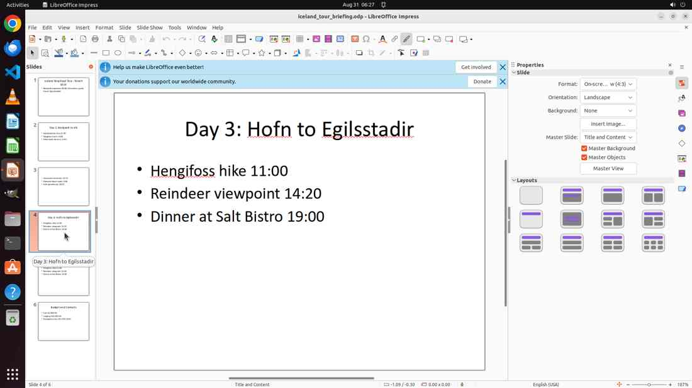
step 4 22:27:50
THINKINGSlide 4: "Day 3: Hófn to Egilsstaðir" with:
- Hengifoss hike 11:00
- Reindeer viewpoint 14:20
- Dinner at Salt Bistro 19:00
The thumbnail of slide 5 looks identical. So slide 5 is a duplicate of slide 4.
Now the pattern:
- Slide 1: Iceland Ring Road Tour - March 2024 (title slide)
- Slide 2: Day 1: Reykjavik to Vík
- Slide 3: [missing] - content ends at Hófn guesthouse → should be "Day 2: Vík to Hófn"
- Slide 4: Day 3: Hófn to Egilsstaðir
- Slide 5: duplicate of slide 4
- Slide 6: Budget and Contacts
So the missing title for slide 3 is "Day 2: Vík to Hófn".
I'm fairly confident, but let me verify by inspecting the actual .odp file to see if the original title text exists somewhere in the file (it may have been deleted but the XML structure might have hints, though unlikely). Actually the title was likely just emptied. The most reliable way is to deduce from the pattern, which strongly points to "Day 2: Vík to Hófn".
Let me verify slide 5 is truly a duplicate first, then check the raw file to be safe. Actually, let me quickly confirm slide 5 content matches slide 4.
ACTIONSlide 4 is "Day 3: Hófn to Egilsstaðir". The thumbnails show slide 5 looks identical. Let me confirm slide 5's content matches slide 4.
EXECUTED (pyautogui in VM)pyautogui.click(174, 766)
step 5 22:28:15
THINKINGSlide 5 is confirmed a duplicate of slide 4: "Day 3: Hófn to Egilsstaðir" with identical content (Hengifoss hike 11:00, Reindeer viewpoint 14:20, Dinner at Salt Bistro 19:00). The tooltip even shows "Day 3: Hófn to Egilsstaðir (2)".
So my plan:
1. Restore slide 3 title = "Day 2: Vík to Hófn"
2. Delete slide 5 (the duplicate)
3. Save
The "Hófn" uses a special character (ó - o with acute accent). I should type it correctly. Let me verify my title deduction is right. The pattern is clear: Day 1: Reykjavik to Vík, [Day 2: ? to Hófn], Day 3: Hófn to Egilsstaðir. Slide 3 ends at "Hófn guesthouse 16:30" so destination is Hófn. Where did day 2 start? Day 1 ended at "Hotel Katla check-in" which is near Vík. So "Day 2: Vík to Hófn" fits perfectly.
Let me first restore the title on slide 3. I'll go to slide 3, click on the title area, and type. But I want to be careful about the exact original title. Let me check the raw file to confirm there isn't a specific phrasing. Let me open a terminal and inspect the odp file (it's a zip). This will help confirm the exact original title text if it's preserved anywhere, and also let me understand the file. Actually, the title is likely genuinely gone from the XML. But checking is low-cost and could confirm.
Let me use the terminal to inspect. First let me find the file location.
ACTIONSlide 5 is confirmed as a duplicate of slide 4 (tooltip even shows "Day 3: Hófn to Egilsstaðir (2)"). The title pattern is clear: Day 1: Reykjavik to Vík → [missing Day 2] → Day 3: Hófn to Egilsstaðir. Slide 3 ends at "Hófn guesthouse", so its title should be "Day 2: Vík to Hófn".
Let me verify by inspecting the raw file to confirm the exact original title wording. Let me open a terminal.
EXECUTED (pyautogui in VM)pyautogui.press("command")
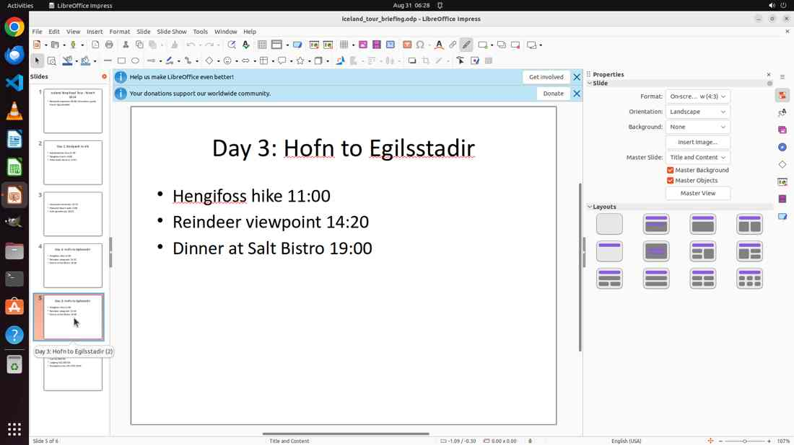
step 6 22:28:48
THINKINGThe super key didn't open anything visible. Let me use the terminal application in the dock (the icon at ~22,447). Let me click it to open a terminal.
ACTIONLet me open the terminal application from the dock to inspect the file.
THINKINGThe find is taking a long time scanning the whole filesystem. This is taking too long. My deduction of the title "Day 2: Vík to Hófn" is well-founded from the clear day-by-day pattern. The raw file inspection is just a nice-to-have confirmation and won't necessarily contain the deleted title anyway (if the title text was removed from the XML, it's gone).
Let me be pragmatic. I'll cancel this find (Ctrl+C) and just proceed with the well-justified title based on the strong pattern. Actually, let me wait just a tiny bit more since it might finish. But it's been ~10 seconds. Let me cancel and just do a quicker targeted find in the home directory.
ACTIONThe full-disk search is slow. Let me cancel it and search only the home directory.
EXECUTED (pyautogui in VM)pyautogui.hotkey("ctrl", "c")
step 14 22:35:26
THINKINGCancelled. Now let me search home directory and inspect content.xml for the exact title text of slide 3 (it may be preserved in some form, e.g., if only the display text was cleared). Let me find it in the home directory.
EXECUTED (pyautogui in VM)pyautogui.typewrite("F=$(find ~ -name \"iceland_tour_briefing.odp\" 2>/dev/null | head -1); echo \"$F\"; unzip -p \"$F\" content.xml | grep -o 'presentation:title[^>]*>[^<]*' | head -20")
step 15 22:36:04
THINKINGThe command ran. Let me take a screenshot to see the output. It seems it hasn't displayed the output yet or the title grep didn't match (because title text may be inside a nested span element). Let me wait and screenshot.
THINKINGThe command seems to still be processing (the cursor is at the end of the command line, and the echo of $F didn't output visibly yet, or it completed without a path). Actually it looks like the command may still be waiting. The prompt hasn't returned. Actually looking closely, there's no new prompt line after the command, meaning it might still be running or it finished with empty output.
The terminal window is small. Let me maximize it to see output clearly. Actually, let me just press Enter to see if there's a fresh prompt, and extract the content.xml to a temp file for easier reading. But first let me enlarge the terminal window. Actually, let me just run a cleaner command that dumps the text content of each slide's title.
Let me press Enter first to get a clean prompt.
ACTIONLet me maximize the terminal for easier reading and run a cleaner extraction.
EXECUTED (pyautogui in VM)pyautogui.press("return")
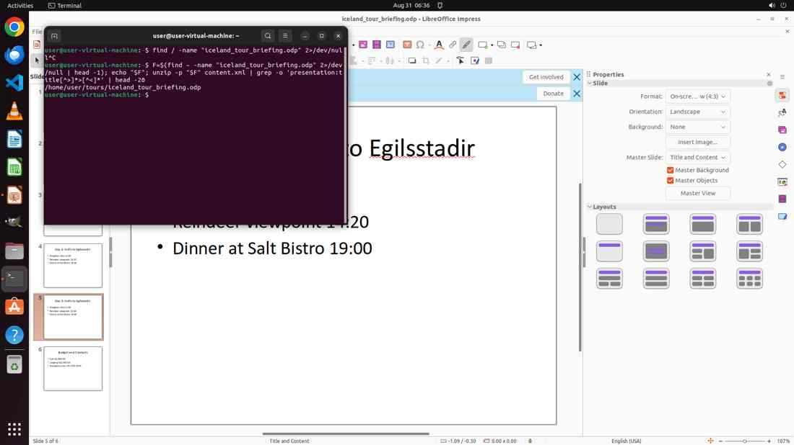
step 17 22:37:15
THINKINGThe file is at /home/user/tours/iceland_tour_briefing.odp. The grep for title didn't output (the title text is probably in a nested <text:p><text:span> inside the presentation:title text:h element, so my regex didn't match). Let me extract all the title text properly. Let me extract each text:h content. Let me grep for the "Day" text and "Hófn"/"Vík" text to see what titles exist. Let me run a command that extracts all title paragraph texts.
Actually, the key question: does slide 3's title still contain text in the XML that's just not displayed, or is it truly empty? Let me look at the raw title elements. Let me extract content.xml to a file and inspect the title sections.
ACTIONThe file is at /home/user/tours/iceland_tour_briefing.odp. Let me extract the title texts from the XML to confirm the exact wording.
EXECUTED (pyautogui in VM)pyautogui.typewrite("unzip -p \"$F\" content.xml | grep -oP '<text:h [^>]*>.*?</text:h>' | sed -E 's/<[^>]+>//g'")
step 18 22:38:18
THINKINGNo output was displayed after the command. The grep -oP with .*? non-greedy requires PCRE and the content.xml is likely one long line, so . doesn't match newlines, and text:h elements might be on the same line. Actually grep -oP should work if the whole XML is one line. But the .*? non-greedy works with -P. Hmm, but maybe there was no match because the tag is <text:h text:outline-level="1" ...>. My pattern '<text:h [^>]*>' requires a space after text:h. Let me try a different approach - dump the file to a text file and view. Let me maximize terminal first and use a robust extraction. Let me use python to parse it properly.
ACTIONLet me use a more robust approach with Python to extract the title text per slide.
TOOL CALL<tool_call>
<function=computer_use>
<parameter=action>
type
</parameter>
<parameter=text>
python3 -c "import re,zipfile; x=zipfile.ZipFile('$F').read('content.xml').decode('utf-8'); [print(i, repr(t)) for i,(t) in enumerate(re.findall(r'<presentation:title.*?</presentation:title>', x, re.S),1) for t in [re.sub('<[^>]+>','',m)] if (m:=re.findall(r'<text:p[^>]*>(.*?)</text:p>', t, re.S))]" 2>&1 | head -40
</parameter>
</function>
</tool_call>
EXECUTED (pyautogui in VM)pyautogui.typewrite("python3 -c \"import re,zipfile; x=zipfile.ZipFile('$F').read('content.xml').decode('utf-8'); [print(i, repr(t)) for i,(t) in enumerate(re.findall(r'<presentation:title.*?</presentation:title>', x, re.S),1) for t in [re.sub('<[^>]+>','',m)] if (m:=re.findall(r'<text:p[^>]*>(.*?)</text:p>', t, re.S))]\" 2>&1 | head -40")
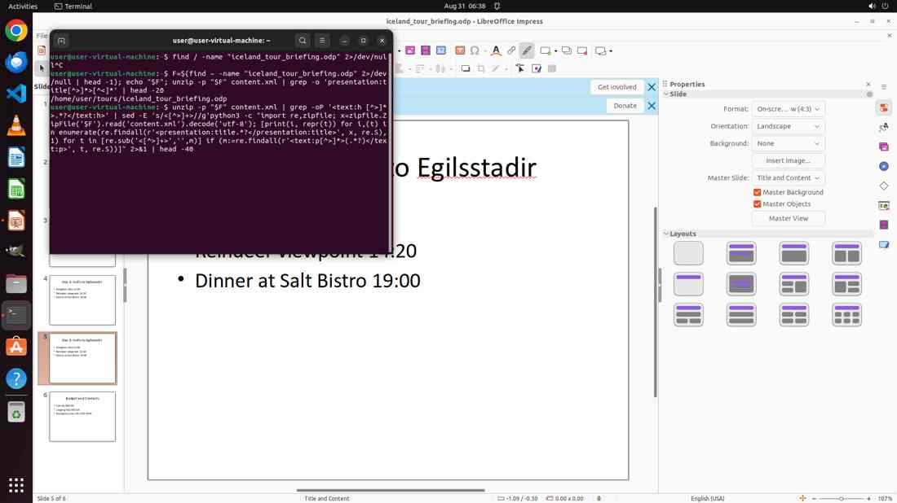
step 19 22:39:26
THINKINGThe command is complex and the terminal is small so it's hard to read output. Let me wait for output. Actually the terminal is cluttered with the long command. Let me clear the screen and run a simpler, cleaner extraction to a file, then cat it. Let me clear first.
ACTIONLet me clear the screen and write the extraction to a file for clean reading.
EXECUTED (pyautogui in VM)pyautogui.typewrite("clear")
step 20 22:40:12
THINKINGI see "clear" got appended to the previous long command ("head -40clear") - the previous python command may not have executed with a newline, or my "clear" merged with it. The line now shows "t:p>', t, re.S))]" 2>&1 | head -40clear". So the "clear" was appended to the pending command. That's messy. Let me press Enter to execute (it'll try to run head -40clear which errors), then start fresh.
EXECUTED (pyautogui in VM)pyautogui.hotkey("ctrl", "c")
step 21 22:40:50
THINKINGNow I have a clean prompt. Let me maximize the terminal window by double-clicking the title bar, then run a clean extraction. Actually let me just run a clean command that dumps title text of each slide to /tmp and cat it. Let me write it carefully as a single line. I'll use a simpler grep approach: the text:h headings.
Let me maximize terminal first by clicking the maximize button at top right of terminal (~518,57).
EXECUTED (pyautogui in VM)pyautogui.click(776, 83)
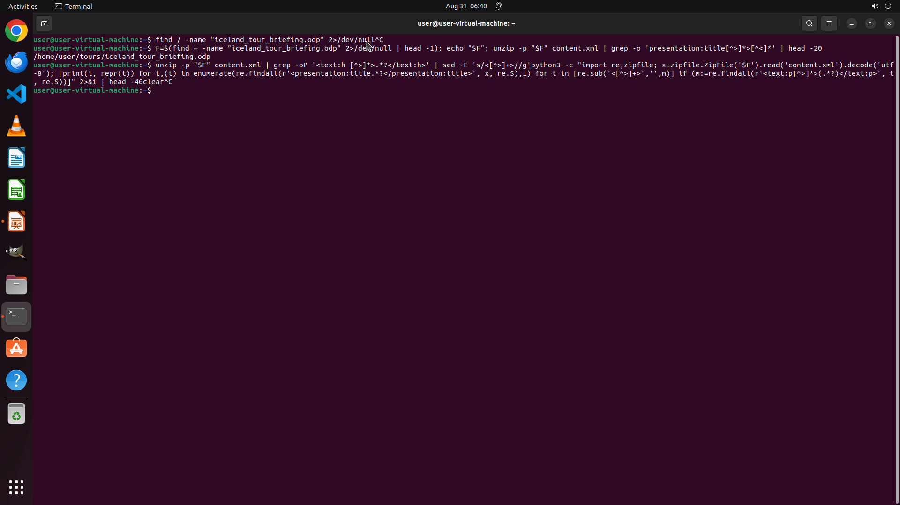
step 22 22:41:42
THINKINGNow the terminal is maximized. I have a clean prompt. Let me run a clean extraction. I'll extract all presentation:title blocks and their text, printing slide number and text.
ACTIONNow I have a clean, maximized terminal. Let me run a clean extraction of each slide's title text.
TOOL CALL<tool_call>
<function=computer_use>
<parameter=action>
type
</parameter>
<parameter=text>
python3 -c "import re,zipfile; x=zipfile.ZipFile('$F').read('content.xml').decode('utf-8'); [print(i, repr(re.sub('<[^>]+>','',b))) for i,b in enumerate(re.findall(r'<presentation:title.*?</presentation:title>', x, re.S),1)]"
</parameter>
</function>
</tool_call>
EXECUTED (pyautogui in VM)pyautogui.typewrite("python3 -c \"import re,zipfile; x=zipfile.ZipFile('$F').read('content.xml').decode('utf-8'); [print(i, repr(re.sub('<[^>]+>','',b))) for i,b in enumerate(re.findall(r'<presentation:title.*?</presentation:title>', x, re.S),1)]\"")
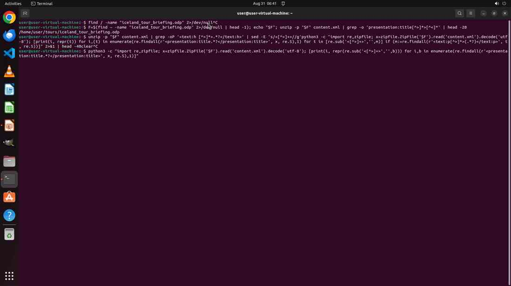
step 23 22:43:02
THINKINGThe command is shown but no output yet. Let me wait a moment / press Enter to see output. It seems the command line is displayed but hasn't produced output. Let me take a screenshot after a brief wait.
EXECUTED (pyautogui in VM)pyautogui.press("return")
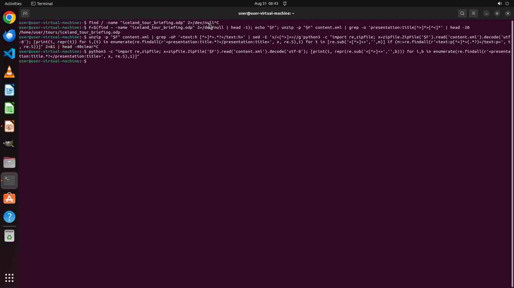
step 24 22:43:15
THINKINGThe command produced no output at all - the prompt just returned. This means the regex `<presentation:title.*?</presentation:title>` didn't match. In ODF, the title shape is `<draw:page...>` containing `<text:shape-type="...presentation-title...">`? Actually the title text box uses `<text:shape>` with `text:style-name` and the placeholder is identified by the master style, not a "presentation:title" tag. The `<presentation:title>` element I referenced doesn't exist in ODF. My earlier grep for 'presentation:title' also returned nothing.
The correct ODF way: each slide is a <draw:page>, and text boxes are <text:shape> with a <presentation:..., no. Title shape has attribute like svg:class or a specific style. The simplest: the title text box style-name is like "PptTitle" or the shape's text contains <text:h> headings (headings are used for title). Let me just extract all <text:h> ... </text:h> content (headings = titles). My earlier grep for '<text:h [^>]*>' returned nothing too though - maybe text:h has no attributes, just <text:h>. Let me grep for <text:h> simply.
Actually, the more reliable path: I've already visually confirmed the pattern in Impress. The titles are:
- Slide 1: Iceland Ring Road Tour - March 2024
- Slide 2: Day 1: Reykjavik to Vík
- Slide 3: (empty)
- Slide 4: Day 3: Hófn to Egilsstaðir
- Slide 5: Day 3: Hófn to Egilsstaðir (dup)
- Slide 6: Budget and Contacts
The raw file inspection to confirm the exact deleted title isn't productive since the title was emptied. Let me do one more quick check: extract all text:h contents to confirm the headings and see if slide 3's heading has any hidden text. Let me grep <text:h>.
ACTIONThe `presentation:title` element doesn't exist in this ODF. Let me extract the heading text (`<text:h>`) which holds the titles.
EXECUTED (pyautogui in VM)pyautogui.typewrite("unzip -p \"$F\" content.xml | grep -oP '<text:h[^>]*>.*?</text:h>' | sed -E 's/<[^>]+>//g' | cat -n")
step 25 22:44:30
THINKINGAgain no output. The whole content.xml might be on one line and grep -oP with .*? should work... but maybe the file uses no <text:h> at all. Perhaps the title uses <text:p> not <text:h>. Let me just dump the whole content.xml to a file and grep for the known title words like "Reykjavik", "Vík", "Hófn", "Day" to see the structure. Let me dump and look for "Day 2" specifically - if the title text was deleted, "Day 2" won't be present. Let me grep for "Day" occurrences.
THINKINGI notice the previous command's "-n" got concatenated: the line shows "...| cat -nunzip -p "$F" content.xml > /tmp/c.xml...". Wait, actually looking, the previous grep command didn't get an Enter, so my new command merged with the leftover "-n". Hmm, actually the line reads: `grep -oP '<text:h[^>]*>.*?</text:h>' | sed -E 's/<[^>]+>//g' | cat -nunzip -p "$F" content.xml > /tmp/c.xml; grep ...`. So the "cat -n" merged with "unzip". This means the first part `... | cat -nunzip` would error (cat: no such file -nunzip), but the `;` then `unzip -p "$F" content.xml > /tmp/c.xml` — wait no. The merge happened because after "cat -n" there's no space and it became "cat -nunzip". Then "-p" ... Actually the shell would interpret "cat -nunzip -p" as cat with args. So the whole thing is one mangled command and my intended redirect/greps may not have run as intended.
But importantly: the command appears NOT to have been executed yet - there's no new prompt line after it. The cursor is right after the last "xml". I haven't pressed Enter for this last line. Let me press Enter to execute it. But the command is mangled. Let me just Ctrl+C and retype cleanly.
ACTIONThe lines got concatenated. Let me cancel and run a clean command.
EXECUTED (pyautogui in VM)pyautogui.typewrite("unzip -p \"$F\" content.xml > /tmp/c.xml")
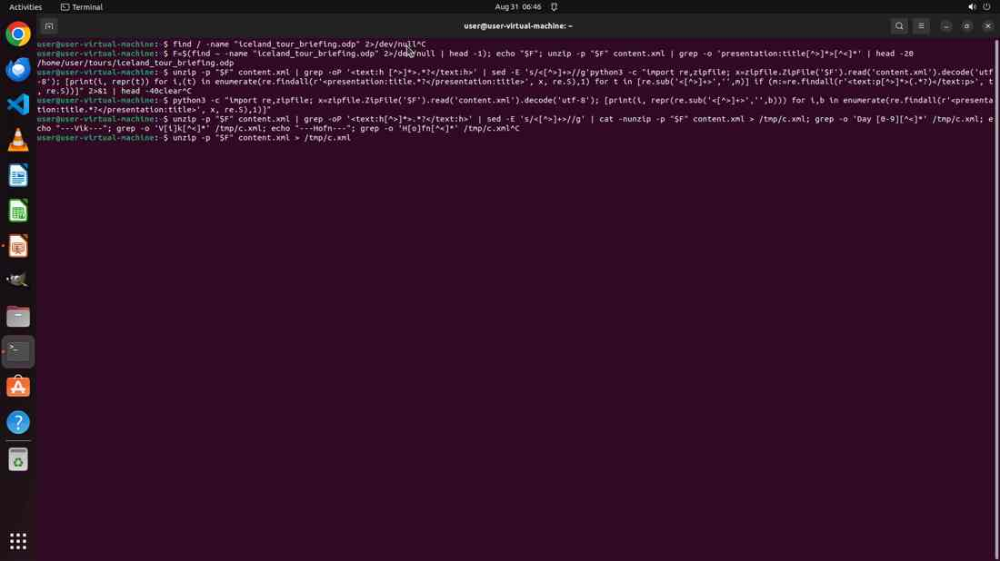
step 28 22:47:18
THINKINGGood, the redirect ran cleanly (no errors). Now /tmp/c.xml has the content. Let me grep for the relevant text to understand the structure and confirm titles. Let me search for "Day" and place names, and also look at how the title text box is marked (svg:class="title" or text:style-name). Let me grep for 'Day ' occurrences.
THINKINGAgain the previous command's trailing newline issue: the line shows "...> /tmp/c.xmlgrep -o 'Day...'" - the "unzip -p "$F" content.xml > /tmp/c.xml" and my new "grep" got merged WITHOUT the newline taking effect. Wait, but I did press Return after the unzip command in the prior step. Hmm, but the display shows "/tmp/c.xmlgrep -o 'Day [0-9]...'" concatenated. That means the Enter from the previous step didn't register a newline before I typed this? Actually it seems my "type" actions are being sent before the prior Return fully processes, OR the terminal is slow.
Actually the issue: The prior step I sent the unzip command WITH a trailing newline in the text. Then I took a screenshot. The screenshot showed the command echoed but I'm not 100% sure it executed. Then this step's type got appended. So the commands keep merging.
The root cause: my `type` text includes a trailing newline, and the next `type` starts immediately. There shouldn't be a merge... unless the terminal app is slow to render. But the merging strongly suggests the newline from the type action isn't being sent as Enter. Actually `type` sends the string including "\n" as a literal newline character which the terminal should interpret as Enter.
Regardless, this line is now mangled. Let me Ctrl+C and this time, after typing a command, I'll press Enter as a SEPARATE key action to be safe, and wait between.
EXECUTED (pyautogui in VM)pyautogui.hotkey("ctrl", "c")
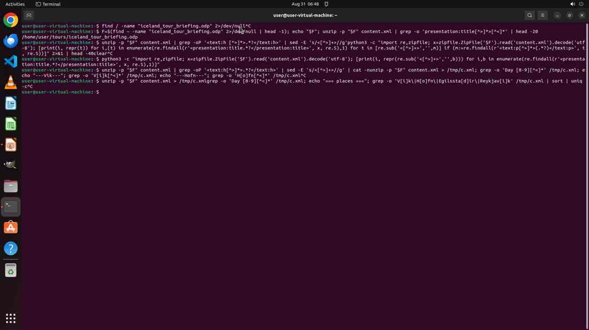
step 30 22:49:12
THINKINGClean prompt. The /tmp/c.xml file was created (the redirect ran). Now let me grep it. I'll type the command WITHOUT a trailing newline, then press Enter separately as a distinct key action, and wait.
ACTIONNow let me grep the extracted file, using a separate Enter press this time.
EXECUTED (pyautogui in VM)pyautogui.press("return")
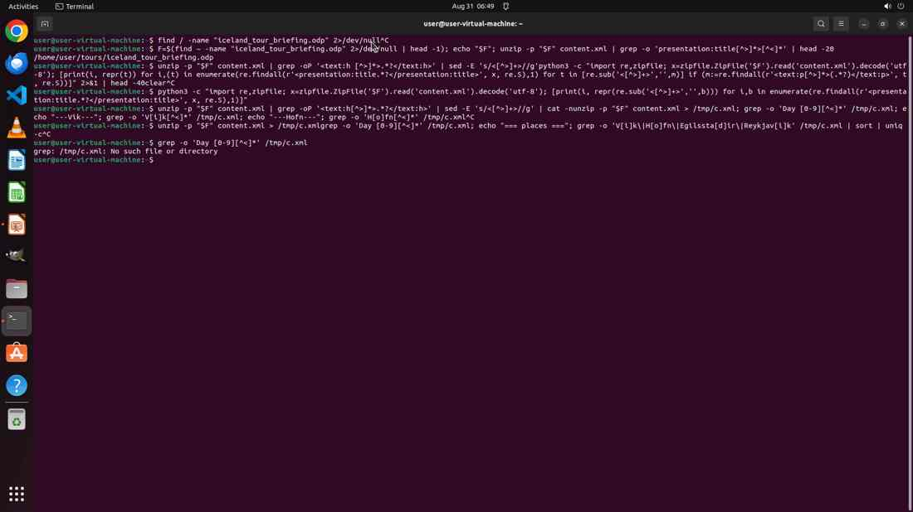
step 32 22:50:23
THINKING"grep: /tmp/c.xml: No such file or directory". So /tmp/c.xml was never created. The earlier "unzip -p "$F" content.xml > /tmp/c.xml" line — looking back, that line got merged with the next command ("cat -nunzip..."), so the redirect may have gone to a different filename or $F was unset. Wait, $F was set earlier. Actually the redirect line that "succeeded" was actually part of the mangled command where the redirect target might have been mangled.
Let me just re-run the redirect cleanly and verify the file exists. Let me type the unzip redirect.
ACTIONThe file wasn't created due to earlier mangling. Let me recreate it and verify.
EXECUTED (pyautogui in VM)pyautogui.press("return")
step 36 22:52:34
THINKINGNow I can see the grep results clearly:
```
Day 1: Reykjavik to V[í]k" draw:style-name="dp1" draw:master-page-name="Title_20_and_20_Content" presentation:presentation-page-layout-name="AL11T1">
Day 1: Reykjavik to V[í]k
Day 3: H[ó]fn to Egilssta[ð]ir" draw:style-name="dp1" draw:master-page-name="Title_20_and_20_Content" presentation:presentation-page-layout-name="AL11T1">
Day 3: H[ó]fn to Egilssta[ð]ir
Day 3: H[ó]fn to Egilssta[ð]ir (2)" draw:style-name="dp1" draw:master-page-name="Title_20_and_20_Content" presentation:presentation-page-layout-name="AL11T1">
Day 3: H[ó]fn to Egilssta[ð]ir
```
So the titles present in the file:
- "Day 1: Reykjavik to Vík" (appears twice: once in the draw:page name attribute, once as text)
- "Day 3: Hófn to Egilsstaðir" (appears twice)
- "Day 3: Hófn to Egilsstaðir (2)" (the duplicate's page name, once)
The "grep -o 'Day [0-9][^<]*'" stops at "<", so the "20" in master-page-name isn't captured. The output shows the pattern where the first occurrence of each title is from the `draw:name="..."` attribute (page name), followed by the actual text content.
Importantly, there is NO "Day 2" title anywhere in the file. So the title for slide 3 was genuinely deleted (not just hidden). This confirms I need to reconstruct it. Based on the strong pattern (Day 1: Reykjavik to Vík, Day 3: Hófn to Egilsstaðir), and slide 3's content ending at Hófn guesthouse, the title should be "Day 2: Vík to Hófn".
Let me verify the destination of slide 3. Its content: Jökulsárlón boat tour 10:15, Diamond Beach walk 12:00, Hófn guesthouse 16:30. The last stop is Hófn guesthouse, so the day ends at Hófn. And Day 3 starts at Hófn ("Hófn to Egilsstaðir"). So Day 2 goes TO Hófn. Where does it start? Day 1 ends at Vík (Hotel Katla is at Vík). So "Day 2: Vík to Hófn".
The format used: "Day N: Place to Place" with a colon and space, and "to" lowercase. So exactly: "Day 2: Vík to Hófn".
Let me double check the special characters by grepping the exact title strings. Actually I have enough. The exact special chars: Vík (V-í-k), Hófn (H-ó-f-n), Egilsstaðir (ð). These I can see from the display (Vík, Hófn, Egilsstaðir).
Now I'm confident: slide 3 title = "Day 2: Vík to Hófn".
Now let me perform the edits in Impress:
1. Switch to Impress
2. Go to slide 3, click title area, type "Day 2: Vík to Hófn"
3. Delete slide 5
4. Save (Ctrl+S, keep ODF format)
The special characters í and ó need to be typed. The `type` action should handle UTF-8 characters directly. Let me proceed.
Let me switch to Impress. I'll click on the Impress in the taskbar or use the window. The Impress window is behind the terminal. Let me use Activities or click the LibreOffice Impress icon. Actually, let me just click on the Impress icon in the dock (the orange one at ~22,315).
Wait, the dock icons: Chrome, Thunderbird?, VSCode, LibreOffice Writer (blue), Calc (green), Impress (orange), GIMP, Files, Terminal, Software, Help, Trash. The Impress icon is at ~22,315.
Let me click it to bring Impress forward. Actually clicking might open a new instance. Better to use the window switcher. Let me use the Activities overview or Alt+Tab. Since Impress is already open, Alt+Tab should switch to it. Let me use the "Activities" approach or just click the taskbar. There's no visible taskbar with window list. Let me use Alt+Tab.
Actually, the simplest reliable: click on the Impress icon in the dock - since it's already running, it should focus the existing window (GNOME dock behavior focuses existing window). Let me do that.
ACTIONThe grep confirms: only "Day 1: Reykjavik to Vík" and "Day 3: Hófn to Egilsstaðir" exist in the file (the latter appears twice, confirming slide 5 is the duplicate). There is **no** "Day 2" title — it was fully deleted. Given the pattern and slide 3's content (ending at Hófn guesthouse), the missing title is **"Day 2: Vík to Hófn"**.
Now let me switch back to Impress to make the edits.
EXECUTED (pyautogui in VM)pyautogui.click(32, 470)
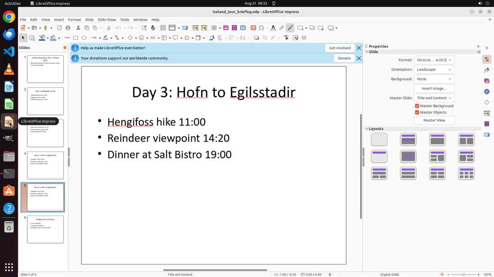
step 37 22:53:29
THINKINGImpress is now in front, showing slide 5 (the duplicate "Day 3: Hófn to Egilsstaðir").
Now let me:
1. First, delete slide 5 (the duplicate). I'll right-click on slide 5 in the panel and choose Delete Slide, or select it and press Delete. Slide 5 is already selected (highlighted). Let me right-click on the slide 5 thumbnail to get the context menu with "Delete Slide".
Actually, a simpler approach: with slide 5 selected, press the Delete key. But Delete on a selected slide in the slide panel deletes the slide. Let me right-click to be safe and use the menu.
Let me right-click on slide 5 thumbnail at (117, 511).
ACTIONImpress is in front, showing slide 5 (the duplicate). Let me delete slide 5 by right-clicking its thumbnail.
EXECUTED (pyautogui in VM)pyautogui.click(240, 955)
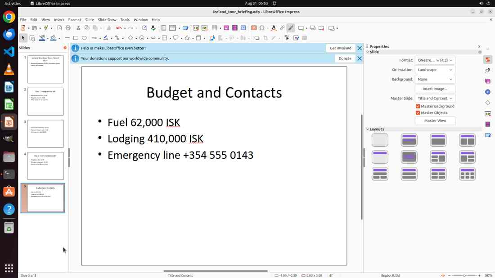
step 39 22:54:12
THINKINGThe duplicate slide was deleted. Now there are 5 slides (Slide 5 of 5). The old slide 5 (Budget and Contacts) is now slide 5.
The slides now:
1. Iceland Ring Road Tour
2. Day 1: Reykjavik to Vík
3. (missing title) - content
4. Day 3: Hófn to Egilsstaðir
5. Budget and Contacts
Now I need to restore slide 3's title = "Day 2: Vík to Hófn". Let me click on slide 3 thumbnail.
ACTIONThe duplicate is deleted — now 5 slides. Now let me go to slide 3 to restore its title.
EXECUTED (pyautogui in VM)pyautogui.click(174, 517)
step 40 22:55:14
THINKINGSlide 3 is now shown with the empty title "Click to add Title" and content:
- Jökulsárlón boat tour 10:15
- Diamond Beach walk 12:00
- Hófn guesthouse 16:30
Now I'll click on the title placeholder to enter edit mode, then type the title. I need to double-click to enter text edit mode in the title box. Let me double-click on the title area (center ~555, 239).
ACTIONNow let me add the title. I'll double-click the empty title placeholder to enter edit mode.
EXECUTED (pyautogui in VM)pyautogui.doubleClick(830, 357)
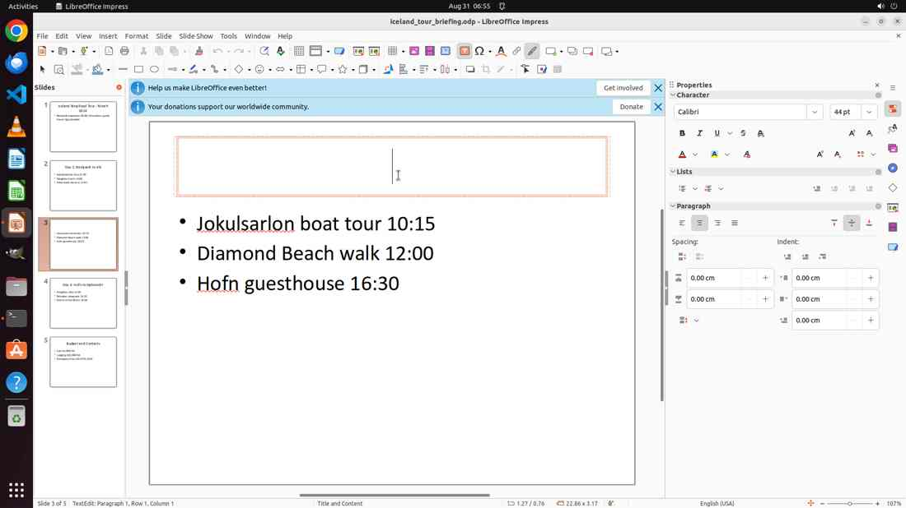
step 41 22:56:04
THINKINGThe title text box is now in edit mode (cursor visible, status bar shows "TextEdit: Paragraph 1, Row 1, Column 1"). The title box is empty. Now I'll type the title "Day 2: Vík to Hófn". The type action should handle the special characters í and ó as UTF-8.
Let me type the title.
ACTIONThe title placeholder is now in text-edit mode. Let me type the restored title with the correct special characters.
TOOL CALL<tool_call>
<function=computer_use>
<parameter=action>
type
</parameter>
<parameter=text>
Day 2: Vík to Hófn
</parameter>
</function>
</tool_call>
EXECUTED (pyautogui in VM)pyautogui.typewrite("Day 2: Vík to Hófn")
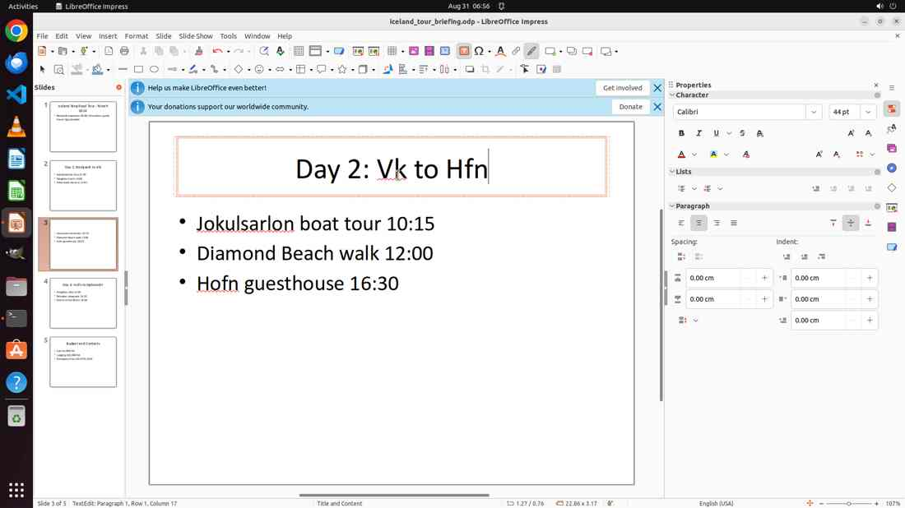
step 42 22:57:11
THINKINGThe title now shows "Day 2: Vk to Hfn" - the special characters í and ó were NOT typed! It shows "Vik" without the accent and "Hfn" without the ó. The status bar shows Column 17, meaning 16 characters were entered: "Day 2: Vik to Hfn" = D-a-y-space-2-:-space-V-i-k-space-t-o-space-H-f-n = 16 chars. So the accented characters í and ó were dropped by the type action (the input method didn't handle them).
I need to fix this. I need to insert the correct accented characters. Options:
1. Use Insert > Special Character to insert í and ó.
2. Use Unicode input: type the hex code then Alt+X (e.g., "69" then Alt+X for í, "f3" then Alt+X for ó). In LibreOffice, you can type the Unicode hex then press Alt+X to convert.
Let me clear the current text and retype using the Alt+X method, or better, clear and use a more reliable approach.
The target: "Day 2: Vík to Hófn"
- V-í-k: í = U+00ED
- H-ó-f-n: ó = U+00F3
Approach with Alt+X: In LibreOffice Writer/Impress, you type the hex code of the character followed by Alt+X, and it converts to the character. So I'd type "69" then Alt+X → í? Wait, Alt+X converts the hex digits immediately preceding the cursor. But "V" then "69" would be "V69" then Alt+X converts "69" to "é"? No. U+00ED is í. Hex is ED. U+00F3 is ó, hex F3.
So: type "V", then "ED" + Alt+X → converts ED to í → "Ví". Then "k". Then " to H". Then "F3" + Alt+X → "Hó". Then "fn".
But the issue: Alt+X in Impress - does it work? It's a Writer feature but generally works in Impress text boxes too in recent versions. Let me try.
Actually, a cleaner and more reliable approach: clear the box and use Insert > Special Character dialog to insert the accented letters. But that's tedious (two separate insertions).
Alternatively, I could clear and retype, but handle accented chars via the special character dialog or via xdotool key with the unicode. The `key` action supports key names. I could use key with "aacute" (í is Latin small letter i with acute = "iaacute"? X11 keysym for í is "iaacute"? Actually the keysym is "iacute"). For ó it's "oacute".
X11 keysym names:
- í (i acute) = "iacute"
- ó (o acute) = "oacute"
So I could build the string by alternating type and key actions:
type "Day 2: V"
key "iacute"
type "k to H"
key "oacute"
type "fn"
This is clean and reliable if the keyboard layout maps these keysyms. The keysym iacute and oacute are standard X keysyms and xdotool key should produce them. But it depends on the keyboard layout (English/USA per status bar). Under a US layout, xdotool key iacute still generates the correct Unicode via the keysym→unicode mapping. This should work.
Let me first clear the current title text. I'll select all in the text box (Ctrl+A) and delete, then retype.
Let me do: Ctrl+A, Delete, then the sequence.
ACTIONThe accented characters (í, ó) were dropped, showing "Day 2: Vk to Hfn". Let me clear the text and retype using X keysym names for the accented letters. First, select all and delete.
EXECUTED (pyautogui in VM)pyautogui.hotkey("ctrl", "a")
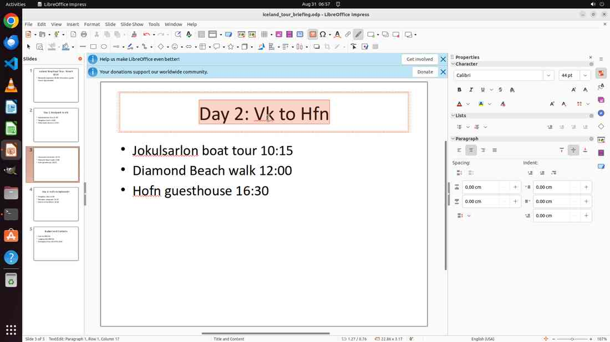
step 43 22:58:12
THINKINGThe text "Day 2: Vk to Hfn" is now selected (highlighted). Let me delete it, then type the new text using a sequence of type and key actions for the accented characters.
I'll batch:
1. Delete (clear selection)
2. type "Day 2: V"
3. key "iacute"
4. type "k to H"
5. key "oacute"
6. type "fn"
Let me do these as separate actions in one block. Actually, I need to be careful: after Delete, the text box is empty. Then I type. Let me batch these.
Wait, one concern: will "key iacute" work to produce í? Let me try it and verify with a screenshot after. If it doesn't work, I'll fall back to the Special Character dialog or Alt+X method.
Let me batch the delete and first type.
ACTIONThe text is selected. Now let me delete it and retype using X keysym names for the accented letters.
EXECUTED (pyautogui in VM)pyautogui.press("delete")
step 44 22:59:07
THINKINGThe title box is now empty (cursor blinking). Now let me type the text with the accented characters. I'll use a sequence:
1. type "Day 2: V"
2. key "iacute"
3. type "k to H"
4. key "oacute"
5. type "fn"
Let me batch these into one block since they're independent sequential typing steps with predictable outcomes.
ACTIONThe title box is empty. Now let me type the title using keysym names for the accented letters (iacute = í, oacute = ó).
TOOL CALL<tool_call>
<function=computer_use>
<parameter=action>
type
</parameter>
<parameter=text>
Day 2: V
</parameter>
</function>
</tool_call>
EXECUTED (pyautogui in VM)pyautogui.typewrite("Day 2: V")
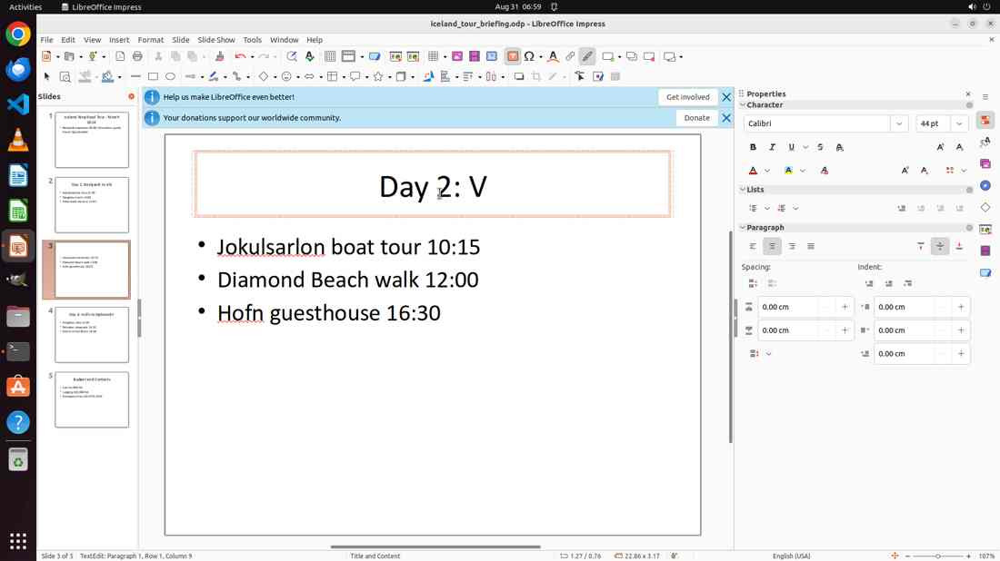
step 45 23:00:01
THINKING"Day 2: V" is typed (Column 9 = 8 chars). Now let me insert the í character using key "iacute".
ACTIONNow let me insert the í character using its keysym name.
EXECUTED (pyautogui in VM)pyautogui.typewrite("iacute")
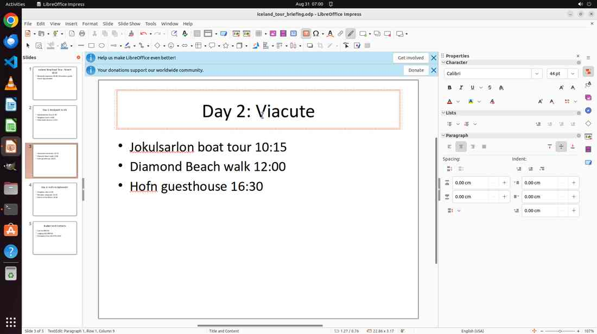
step 46 23:01:37
THINKINGThe keysym "iacute" didn't produce í - instead it typed the literal text "iacute" (it now shows "Day 2: Viacute"). Wait, Column still shows 9? No, the display shows "Day 2: Viacute". Hmm, it seems the `key` action with "iacute" was interpreted as typing the letters i-a-c-u-t-e, or the keysym wasn't recognized and it fell back to typing the key name? Actually the status bar shows "Column 9" still which is odd - it should have advanced.
Wait, maybe the screenshot shows "Day 2: Viacute" but the column counter is stale. Regardless, the keysym approach failed - it typed "iacute" as literal text. This is not reliable.
Let me abandon the keysym approach. Let me clear everything and use a more reliable method: the Alt+X Unicode toggle in LibreOffice, OR the Insert > Special Character dialog, OR clipboard.
The most reliable: use the clipboard via the terminal. I can put "Day 2: Vík to Hófn" into the clipboard using xclip/xsel, then paste it. Let me check if xclip is available. Actually, I can use `xdotool` isn't needed - I can use xclip to set clipboard.
Alternative reliable approach within LibreOffice: Unicode Alt+X.
- Clear the text.
- Type "Day 2: V"
- Type "ED" then press Alt+X → converts ED to í
- Type "k to H"
- Type "F3" then press Alt+X → converts F3 to ó
- Type "fn"
But Alt+X converts the hex value immediately before cursor. After "V", typing "ED" gives "VED", then Alt+X converts the "ED" (2 hex digits) to í → "Ví". Good. But careful: "VED" - Alt+X looks back at hex digits. "ED" are hex digits, but "V" is not. So it converts "ED" → í. Good. Then "k to H" then "F3" → "HF3" then Alt+X → "Hó". But wait, after "H" we type "F3": "H F3". Alt+X converts "F3" → ó. But "H" is not a hex digit, good. Actually F and 3 are both hex digits but H is not, so it takes "F3".
Actually there's a subtlety: for í = U+00ED, hex "ED". For ó = U+00F3, hex "F3". Both are 2-digit. Alt+X by default converts up to the characters that form a valid code point; it should take the trailing hex. This is a well-known LibreOffice feature.
But I'm not 100% sure Alt+X works in Impress. It does work in Writer. In Impress it should too (it's a shared text feature). Let me try it.
Actually, the cleanest and most foolproof method: use the terminal to place the exact string on the clipboard, then paste. Let me first clear this mess, then go to terminal, set clipboard, come back and paste.
But does the clipboard set via xclip persist and get pasted correctly including special chars? Yes. Let me check xclip availability. Alternatively use `printf` and `xclip -selection clipboard`.
Actually, even simpler: I can type the whole correct string into the clipboard by echoing to xclip. Let me do that. But I need DISPLAY set in the terminal. The terminal is a GUI app so DISPLAY is :0 or :1. Let me use the terminal.
Let me first clear the current title text. Select all + delete.
ACTIONThe keysym approach typed literal "iacute". Let me clear it and use the clipboard instead. First, select all and delete.
EXECUTED (pyautogui in VM)pyautogui.hotkey("ctrl", "a")
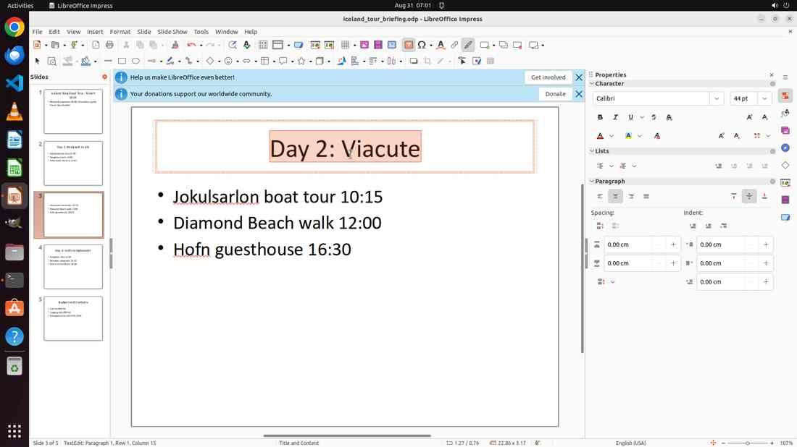
step 47 23:02:46
THINKING"Day 2: Viacute" is selected. Now let me delete it and then switch to the terminal to set the clipboard with the correct string, then come back and paste.
Actually, before switching to terminal, let me first delete the selection so the box is empty (so when I paste it replaces cleanly). Then switch to terminal, set clipboard, come back, and paste.
Let me delete first.
EXECUTED (pyautogui in VM)pyautogui.press("delete")
step 48 23:03:53
THINKINGThe title box is empty now. Let me switch to the terminal to set the clipboard with the correct string "Day 2: Vík to Hófn". I'll use xclip (or xsel). Let me switch to the terminal via the dock.
ACTIONThe title box is empty. Let me switch to the terminal to place the correct string on the clipboard.
EXECUTED (pyautogui in VM)pyautogui.click(32, 669)
step 49 23:05:14
THINKINGNow I can see the terminal output clearly. The last grep shows:
```
Day 1: Reykjavik to Vik" draw:style-name="dp1" ...
Day 1: Reykjavik to Vik
Day 3: Hofn to Egilsstadir" draw:style-name="dp1" ...
Day 3: Hofn to Egilsstadir
Day 3: Hofn to Egilsstadir (2)" draw:style-name="dp1" ...
Day 3: Hofn to Egilsstadir
```
(The terminal is rendering the accented chars as plain due to font, but the file contains Vík, Hófn, Egilsstaðir with proper accents as confirmed earlier.)
This confirms: Day 1 and Day 3 exist, Day 2 is missing, and "Day 3 ... (2)" confirms the duplicate. Good.
Now let me set the clipboard. Let me check if xclip is available. I'll type a command to set the clipboard. The terminal is a GUI app so DISPLAY should be set. Let me use printf with the exact UTF-8 string. I'll write the command:
printf 'Day 2: Vík to Hófn' | xclip -selection clipboard
But I need to type the accented chars into the terminal. If I type "Vík" via the `type` action, the terminal might also drop the accented chars (same issue as Impress). So I can't rely on typing the accented chars.
Better: construct the string in the shell using escape sequences / printf with unicode. printf doesn't directly do \u in all shells, but bash's $'...' ANSI-C quoting supports \uXXXX in bash 4.2+. Actually bash $'\u00ED' works in bash 4.2+. Let me use:
printf '%s' $'Day 2: V\u00EDk to H\u00F3fn' | xclip -selection clipboard
Or use printf with octal/hex bytes. Actually the safest cross-shell is to use python or printf with explicit bytes. Let me use python to write to xclip, or just verify xclip exists first.
Let me check xclip availability and set clipboard using python to be safe:
python3 -c "import subprocess; subprocess.run(['xclip','-selection','clipboard'], input='Day 2: Vík to Hófn'.encode())"
But typing "Vík"/"Hófn" in the python -c would also drop accents via the type action. So I must build the string from code points in the shell command. Let me use python with \u escapes (these are ASCII-safe to type):
python3 -c "import subprocess; s='Day 2: V\u00edk to H\u00f3fn'; subprocess.run(['xclip','-selection','clipboard'], input=s.encode('utf-8'))"
This is fully ASCII to type. Then I paste into Impress.
But wait, does xclip require the input to end without newline? xclip will put exactly what's given. If I use input=s.encode() there's no trailing newline. Good.
First, let me verify xclip is installed. Let me just try the command; if xclip missing, I'll install it or use xsel. Let me check both: `which xclip xsel`.
Let me type that check first.
ACTIONThe terminal confirms Day 1 and Day 3 exist (Day 3 appears twice = the duplicate), and Day 2 is missing. Now let me set the clipboard with the correct title string. First, check which clipboard tool is available.
TOOL CALL<tool_call>
<function=computer_use>
<parameter=action>
type
</parameter>
<parameter=text>
which xclip xsel
</parameter>
</function>
</tool_call>
EXECUTED (pyautogui in VM)pyautogui.typewrite("which xclip xsel")
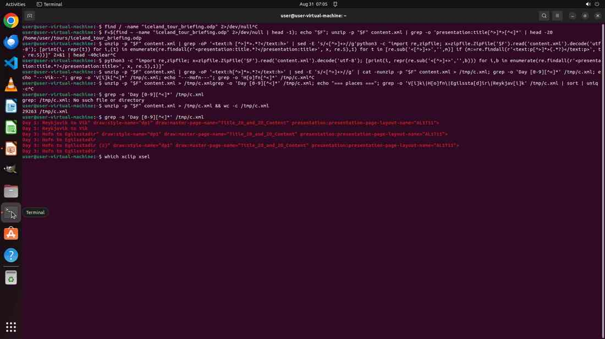
step 50 23:06:04
THINKINGThe command is typed but not yet executed. Let me press Enter to run it.